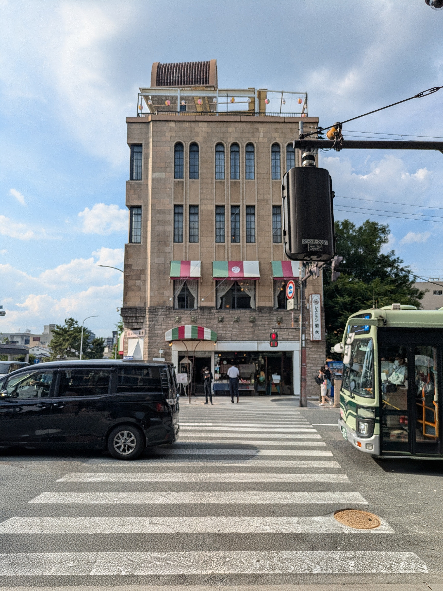
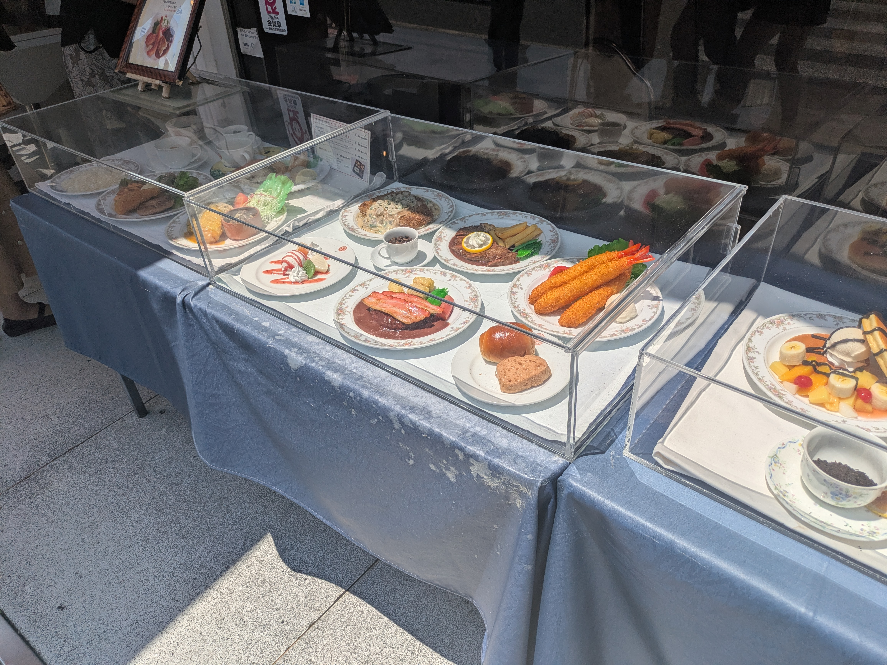
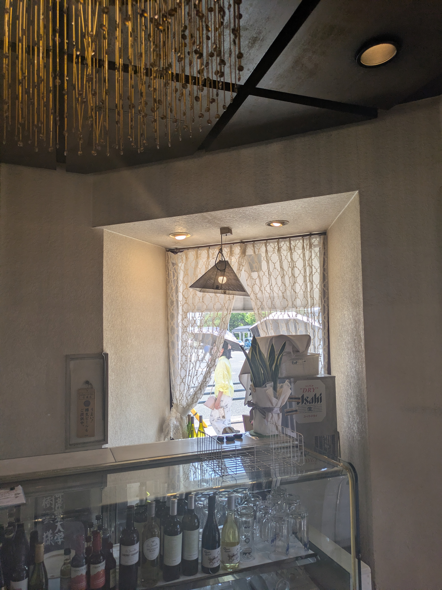
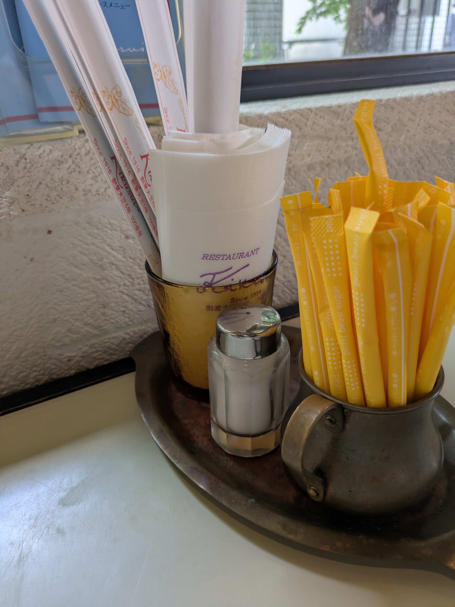
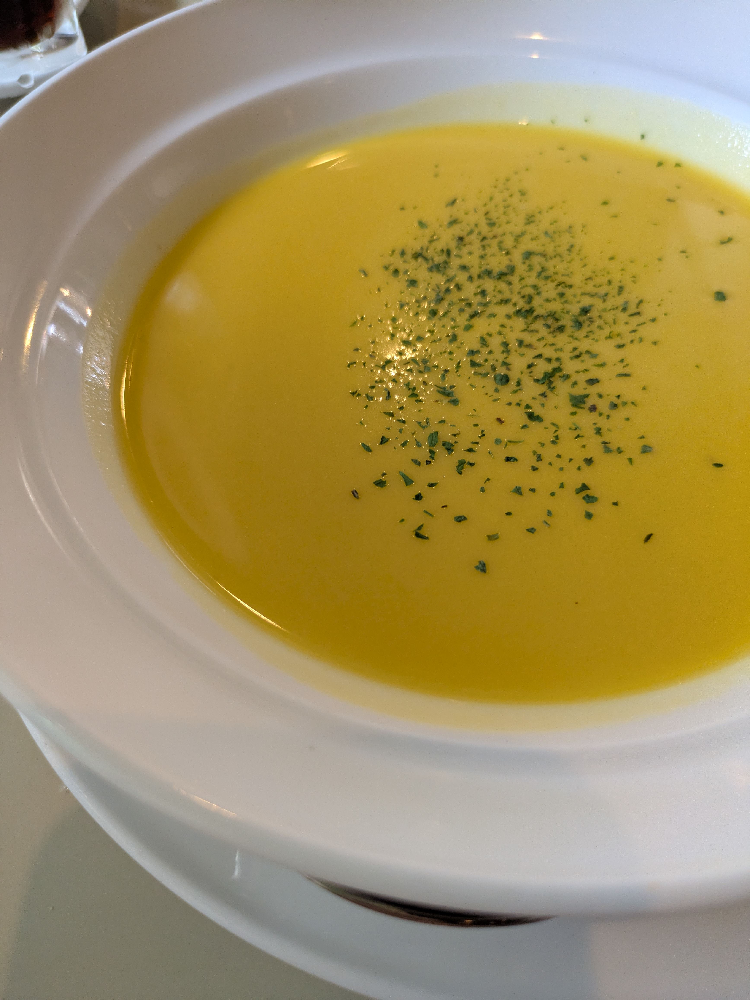
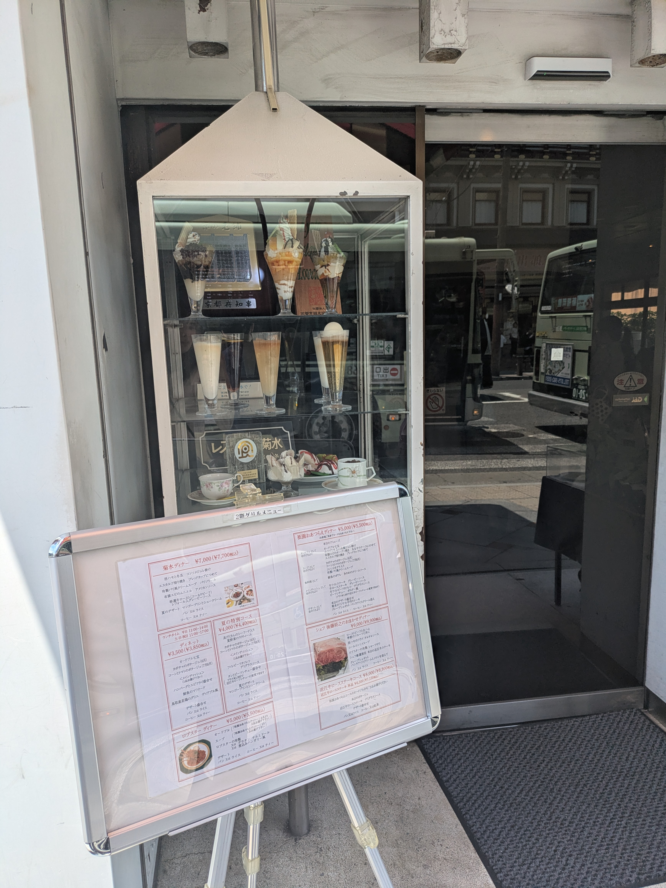
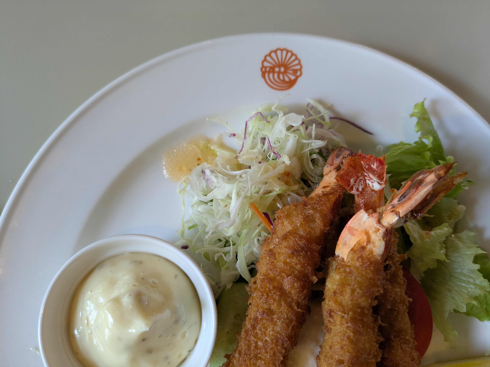
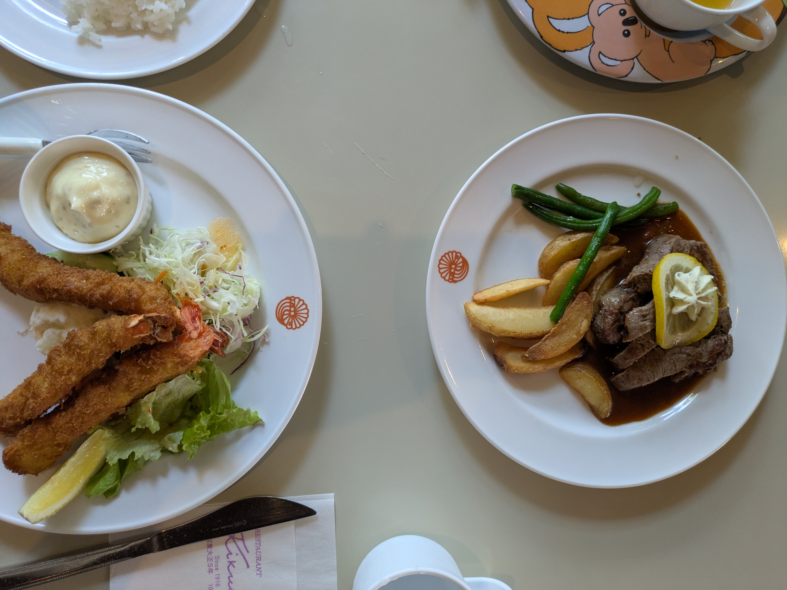
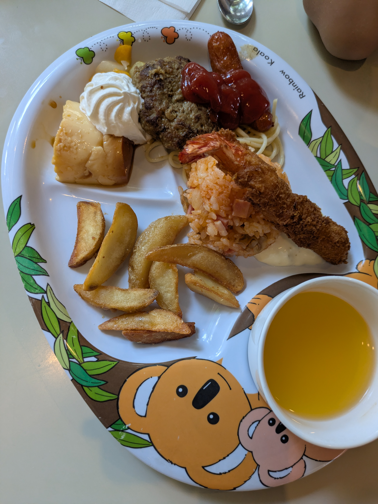

歌舞伎座の向かい。少し曇ったガラスの向こうで、白い制服のスタッフが静かに動いている。横断歩道を渡るたびに気になっていた店だ。映画で見た古い洋館のようでもあり、どこか別世界のようにも見える。



レストラン菊水は大正五年創業の老舗洋食店。店先の食品サンプルに何度も足を止めながらも、子連れでは難しそうだと勝手に思い込んでいた。
ところが旅行最終日、お子様ランチがあることを知る。これは行くしかない。
実際に入ってみると、客層はやはり落ち着いていた。歌舞伎帰りなのか着物姿の人も多い。ただ、子ども用のカトラリーを用意してもらえたり、ベビーカーを預かっていただけたりと、子連れだからと肩身の狭い思いをすることはなかった。
ただ、ファミリーレストランのような感覚で訪れると少し戸惑うかもしれない。店内には落ち着いた時間が流れていて、周囲への配慮やマナーを大切にしたい空気がある。子連れでも利用できるが、その空気を一緒に楽しめる年齢になってからの方が、より心地よく過ごせそうだと感じた。



外から見ても印象的だったが、中に入るとその存在感はさらに増す。長い年月をかけて積み重ねられた空気は、一朝一夕には作れないものだろう。
名物はビーフシチューやハヤシライスらしい。周囲を見渡すとランチセットを注文している人も多く、私も迷った末にヒレステーキとエビフライのセットを選んだ。



けれど、料理については私の好みとは少し違っていた。エビフライは私が普段好んで食べる、しっかりとした身の食感とは異なり、ヒレステーキも期待していた柔らかさではなかった。
一方で、子どもたちはお子様ランチを嬉しそうに頬張っていた。同じテーブルでも感想はそれぞれらしい。
味の感じ方は人によって違うものだと思う。それでも、大正から続く店の空気や、窓の向こうに見えた景色は、この場所でしか味わえないものだった。長く愛されてきた理由を考えながら、店をあとにした。